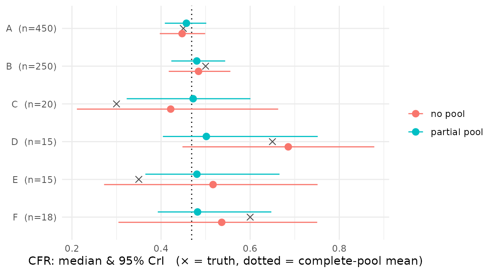
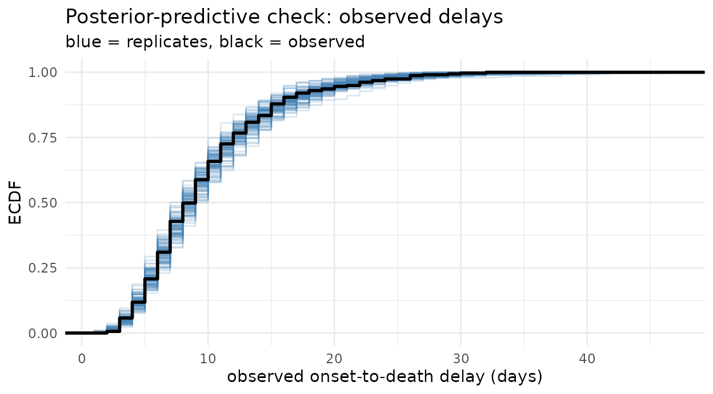

Why stratify, and why pool
The CFR often varies by group – age, treatment centre, calendar period – and a per-group estimate is frequently required. Two limiting cases bracket the options. Fitting each group independently (no pooling) gives high-variance estimates where a group’s sample is small. Fitting one CFR for all groups (complete pooling) ignores between-group variation.
Partial pooling lies between the two: each group’s CFR is
drawn from a common distribution, so groups with more data are estimated
close to independently while groups with less data are shrunk toward the
shared mean. cfrnow is an epidist model, so
prob takes a brms formula and pooling is a
one-line change: prob ~ (1 | group).
A six-site line list
We simulate six treatment centres: two large (n = 450, 250) and four small (n = 15–20), with true CFRs spread around a common mean. The large sites pin the shared mean; the small ones carry little information on their own, so shrinkage acts mainly on them. Site labels are synthetic.
library(cfrnow)
#> Loading required package: distspec
#>
#> Attaching package: 'distspec'
#> The following objects are masked from 'package:stats':
#>
#> Gamma, sd
set.seed(20260714)
sites <- data.frame(
site = c("A", "B", "C", "D", "E", "F"),
n = c(450, 250, 20, 15, 15, 18),
cfr = c(0.45, 0.50, 0.30, 0.65, 0.35, 0.60)
)
death_delay <- LogNormal(mean = 11, sd = 6.5)
recovery_delay <- LogNormal(mean = 16, sd = 8)
ll <- do.call(rbind, Map(function(s, n, cfr) {
cbind(
simulate_linelist(
n = n, cfr = cfr, delay = death_delay,
recovery = recovery_delay, onset_days = 45
),
site = s
)
}, sites$site, sites$n, sites$cfr))
d <- prepare_cfr_data(ll, obs_time = as.Date("2026-02-20"), covariates = "site")
c(cases = d$n_cases, deaths = d$n_deaths)
#> cases deaths
#> 768 313Three fits: complete, no, and partial pooling
The only thing that changes across the three fits is the CFR formula; the delay and recovery delay are co-estimated in each. (Two short chains keep the build time short; use more for inference.)
otd <- LogNormal(meanlog = Normal(2.4, 0.2), sdlog = Normal(0.5, 0.15))
otr <- LogNormal(meanlog = Normal(2.7, 0.2), sdlog = Normal(0.5, 0.15))
args <- list(
delay = otd, recovery_delay = otr, prob_prior = Beta(1, 1),
backend = "cmdstanr", chains = 2, iter = 1000, refresh = 0, seed = 1
)
# complete pooling: a single CFR
fit_pool <- do.call(fit_cfr, c(list(d, formula = brms::bf(mu ~ 1, prob ~ 1)), args))
# no pooling: an independent CFR per site (one estimated logit-CFR per site)
fit_sep <- do.call(fit_cfr, c(list(d, formula = brms::bf(mu ~ 1, prob ~ 0 + site)), args))
# partial pooling: per-site CFR shrunk to a common mean
fit_partial <- do.call(fit_cfr, c(list(d, formula = brms::bf(mu ~ 1, prob ~ (1 | site))), args))Reading the estimates
For the complete-pool fit, summary() reports a single
prob row:
summary(fit_pool)
#> quantity mean q2.5 q50 q97.5 rhat ess_bulk
#> 1 prob 0.4681333 0.4267882 0.4686721 0.508917 1.0010756 813.3004
#> 2 delay_mean 10.8582476 10.0930085 10.8459693 11.742905 1.0013469 926.5919
#> 3 delay_sd 6.6874121 5.7020664 6.6560421 7.947957 0.9994687 907.4016
#> 4 recovery_mean 16.0502588 15.1570828 16.0374672 17.065176 1.0011242 980.8975
#> 5 recovery_sd 8.2562726 7.2671311 8.2214588 9.467139 1.0006297 912.5009For a grouped fit it reports one prob[<site>] row
per site:
summary(fit_sep)
#> quantity mean q2.5 q50 q97.5 rhat ess_bulk
#> 1 prob[A] 0.4480522 0.3971325 0.4472548 0.4990700 1.0017035 1914.872
#> 2 prob[B] 0.4847888 0.4172538 0.4841065 0.5555488 0.9989003 1873.230
#> 3 prob[C] 0.4287040 0.2110529 0.4216512 0.6629198 1.0005887 1706.642
#> 4 prob[D] 0.6812513 0.4480224 0.6855231 0.8786456 0.9995608 1924.386
#> 5 prob[E] 0.5141535 0.2720657 0.5166827 0.7513390 0.9996392 1502.372
#> 6 prob[F] 0.5310520 0.3043325 0.5361800 0.7505137 0.9990898 2065.253
#> 7 delay_mean 10.8671009 10.0924490 10.8468784 11.8531386 0.9990550 1618.720
#> 8 delay_sd 6.7036343 5.6712944 6.6793767 7.9095963 0.9987743 1536.000
#> 9 recovery_mean 16.0667361 15.0689979 16.0460365 17.0854770 1.0004589 2393.782
#> 10 recovery_sd 8.2719518 7.3018037 8.2294945 9.4102772 1.0019774 1600.446Collect those per-site CFR rows from the two grouped fits for the figure below; the complete-pool fit supplies the shared mean.
cfr_rows <- function(fit, approach) {
s <- summary(fit)
r <- s[grepl("^prob\\[", s$quantity), ] # the prob[<site>] rows
data.frame(
approach = approach,
site = sub("^prob\\[(.*)\\]$", "\\1", r$quantity),
median = r$q50, lower = r$q2.5, upper = r$q97.5
)
}
est <- rbind(cfr_rows(fit_sep, "no pool"), cfr_rows(fit_partial, "partial pool"))
est <- merge(est, sites[, c("site", "n", "cfr")], by = "site")
names(est)[names(est) == "cfr"] <- "truth"
s_pool <- summary(fit_pool)
pool_mean <- s_pool$q50[s_pool$quantity == "prob"]Shrinkage
Each site shows its no-pool and partial-pool estimate against the truth (×) and the complete-pool mean (dotted). For the large sites (A, B) the two estimates nearly coincide. For the small sites (C–F) the no-pool interval is wide and the estimate noisy; partial pooling pulls it toward the mean and narrows the interval sharply – lower variance at the cost of some bias.
library(ggplot2)
est$approach <- factor(est$approach, levels = c("no pool", "partial pool"))
est$site <- factor(est$site, levels = rev(sites$site))
ggplot(est, aes(median, site, colour = approach)) +
geom_vline(xintercept = pool_mean, linetype = 3) +
geom_point(aes(x = truth), shape = 4, size = 2.4, colour = "grey30") +
geom_pointrange(aes(xmin = lower, xmax = upper), position = position_dodge(width = 0.55)) +
scale_y_discrete(labels = function(s) paste0(s, " (n=", sites$n[match(s, sites$site)], ")")) +
labs(
x = "CFR: median & 95% CrI (× = truth, dotted = complete-pool mean)",
y = NULL, colour = NULL
) +
theme_minimal()
Varying the delay by group
A pooled onset-to-death delay that appears irregular is often a mixture of several populations. If sites resolve on different timescales, pool the delay by site as well, so each retains its own onset-to-death distribution rather than contributing to a single multimodal one:
Check the fit
Check that the parametric delay reproduces the observed delays; the real-time correction depends on extrapolating that delay’s tail.
pp_check_cfr(fit_partial, type = "delay")